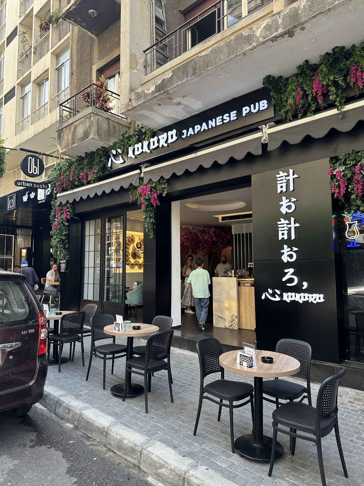

心 — the heart of Badaro
Kokoro means heart, and the Badaro house wears it openly: a garden terrace under a ceiling of flowers, platters of open sushi built like bouquets, mochi for the table and a DJ warming the evenings. The open-sushi formula made it famous; the terrace made it stay. A second branch lives in Deir el Qamar, but this is the original heartbeat.

バダロ · BADARO